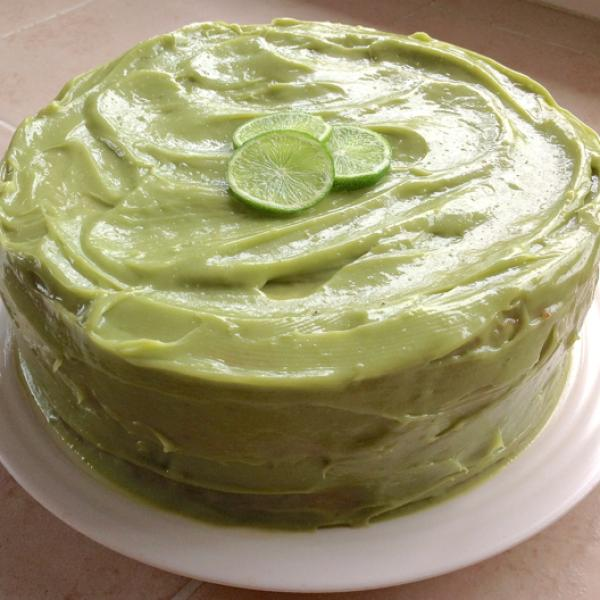

Receita de Bolo de Abacate
Aprenda a fazer um delicioso bolo de abacate com a nossa receita:
Bolo de Abacate

Ingredientes:
- 2 abacates maduros
- 2 xícaras de farinha de trigo
- 1 xícara de açúcar
- 1/2 xícara de leite
- 3 ovos
- 1 colher (chá) de fermento em pó
Modo de Preparo:
- Pré-aqueça o forno a 180°C.
- Em uma tigela, amasse os abacates até obter uma consistência cremosa.
- Adicione os ovos e o açúcar, e misture bem até ficar homogêneo.
- Acrescente a farinha de trigo e o leite, e misture até formar uma massa lisa.
- Por fim, adicione o fermento em pó e misture delicadamente.
- Despeje a massa em uma forma untada e enfarinhada.
- Leve ao forno por aproximadamente 40 minutos, ou até que o bolo esteja dourado e firme ao toque.
- Retire do forno, deixe esfriar e sirva.